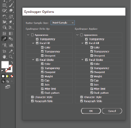
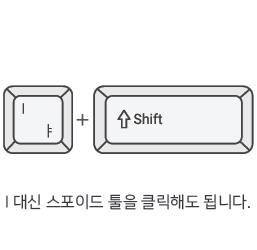
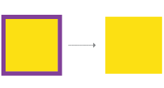
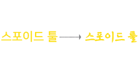
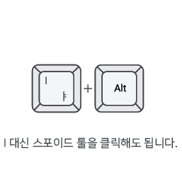
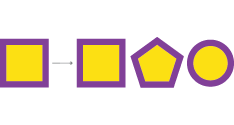
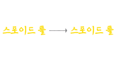
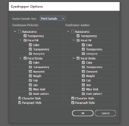
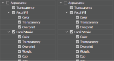
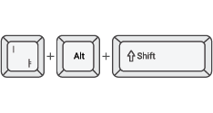

EYEDROPPER TOOL
How to open

스포이드 툴 사용하기(I)
선택대상 오브젝트의 칠, 선, 그라디언트, 투명도, 문자크기, 단락 속성을 포함한 모양 특성을 샘플링 할 수있는 기능을 가지고 있습니다. 스포이드 툴을 사용할 시 다른 오브젝트의 속성을 적용할 개체를 선택한 후 스포이드 툴 선택 혹은 단축키 i 를 누르고 샘플링할 오브젝트를 클릭하면 선택한 오브젝트에 속성이 똑같이 입혀집니다.
Shift + Eyedropper

Shape

Shift를 누르면서 스포이드 툴을 사용하면 색상만 가지고 올 수 있다. 특히 한가지의 색상만 가지고 올 수 있다.
Text

텍스트도 앞에 도형 오브젝트와 마찬가지로 텍스트의 글꼴은 가져오지 않고 색상만을 가지고 올 수 있다.
Alt + Eyedropper

Shape

Alt를 누르면서 스포이드 툴을 사용하게 되면 추출한 속성을 클릭하는 대상에 적용 시켜주는 기능이다.
Text

텍스트도 마찬가지로 적용된다. 기존 우리가 알고있던 스포이드 툴의 반대되는 기능으로 들이붓기 기능이라고도 한다.
Option Setting

Appearance

스포이드 툴 버튼을 두번 클릭하면 옵션창이 나오는데 여기서 Appearance를 체크하여 사용하면 적용한 효과를 모두 가지고 올 수 있다.
Shift+Alt+I

Appearance를 체크한 후 Shift+Alt+I를 누르게 되면 기존 모든효과를 원래 속성을 보존한 상태로 밑으로 가져온다.